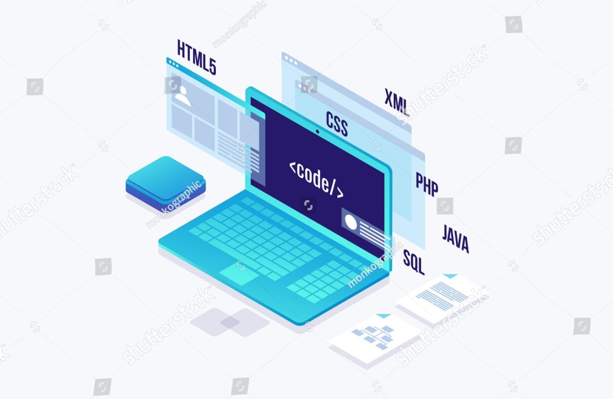

"The fact that we're all connected, the fact that we've got this information space — does change the parameters. It
changes the way people live and work. It changes things for good and for bad. But I think, in general, it's clear that
most bad things come from misunderstanding, and communication is generally the way to resolve misunderstandings — and
the Web's a form of communications — so it generally should be good."
– Time Berners-Lee